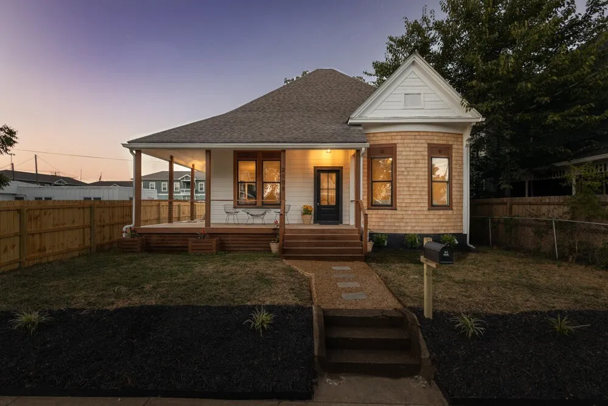
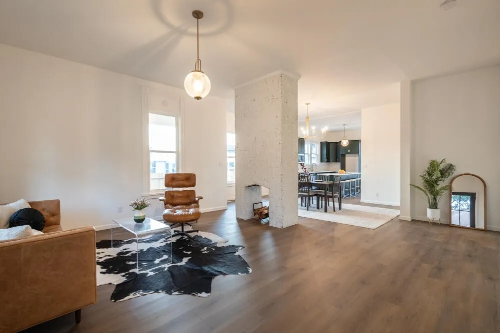
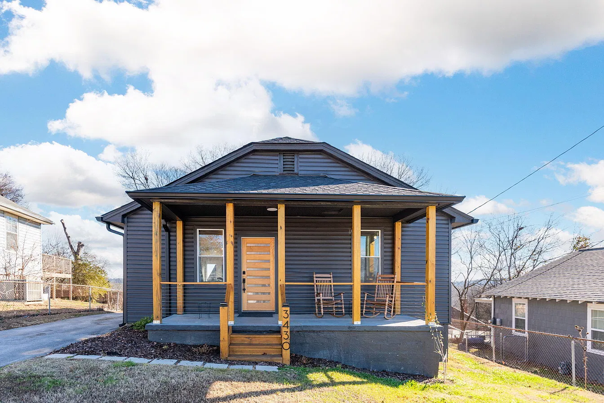
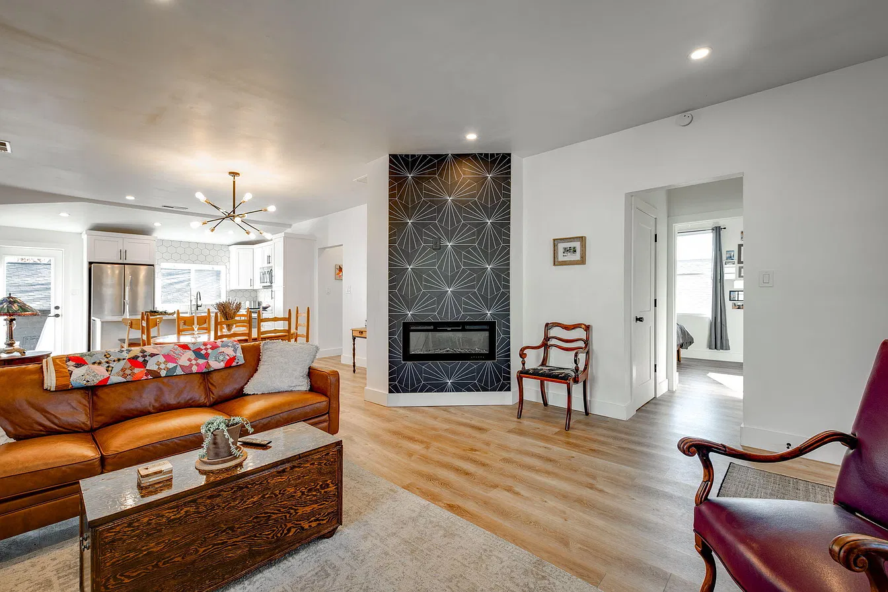
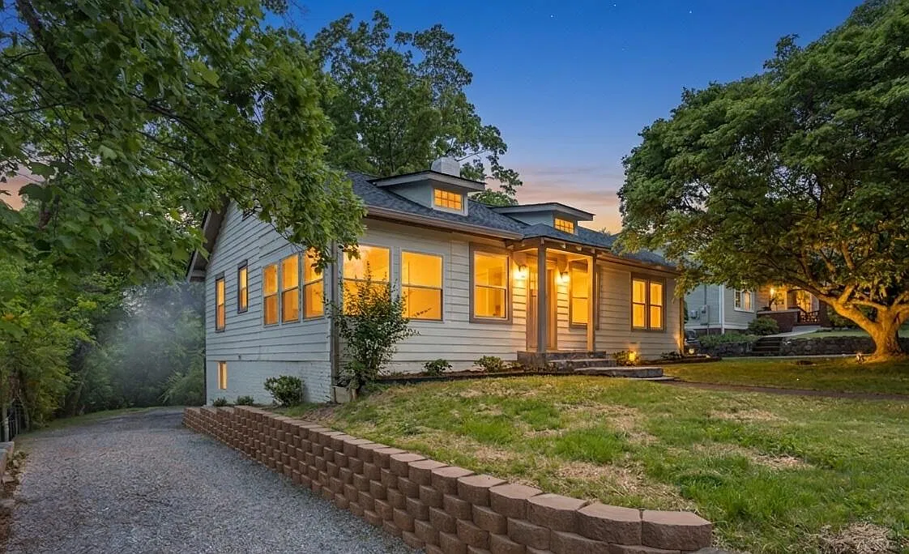
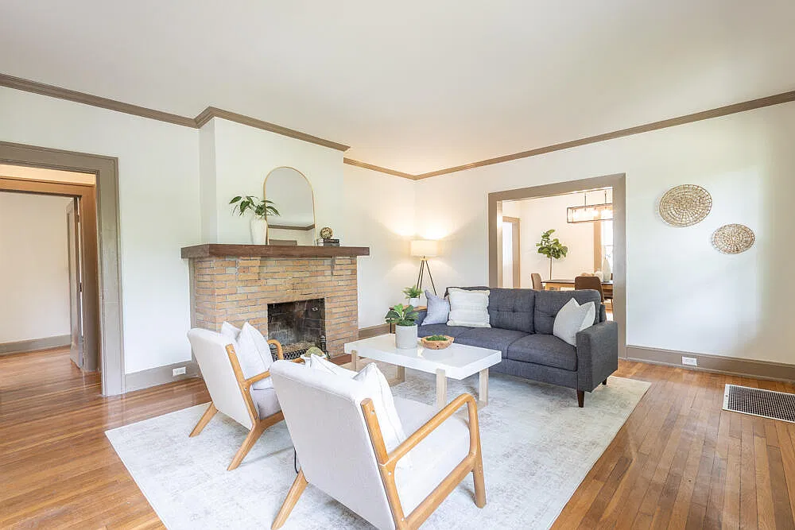

We Buy Houses in Chattanooga
Get a Cash OfferHow it works
1. Tell us about your house
Fill out the quick form.
2. Get a cash offer
We'll call within 24 hours.
3. Close on your timeline
Pick the date that works for you.
Our Work






About Us
Gig City Flips is a locally owned real estate company based right here in Chattanooga. Since 2022, we’ve bought, renovated and sold homes across the area, from Highland Park and Lupton City to East Ridge and Brainerd.
We know selling a house can be stressful, especially when it needs work, you’re short on time, or you just want a simple, no-hassle sale. That’s where we come in. We make fair cash offers, handle the details, and let you close on a timeline that works for you.
Every house we buy gets renovated, so we’re proud to help improve Chattanooga neighborhoods one home at a time. When you work with us, you’re working with a local team, not a faceless national company.